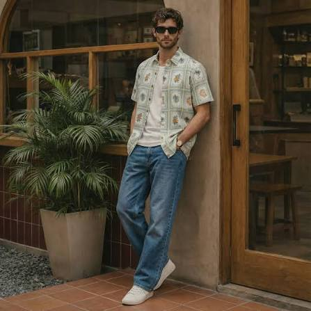
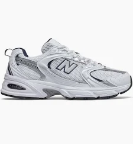
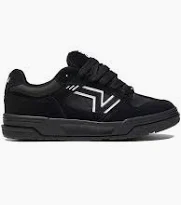
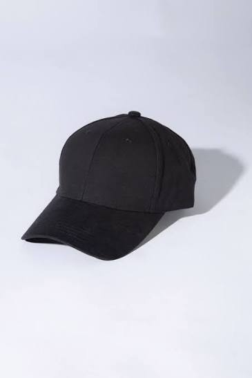
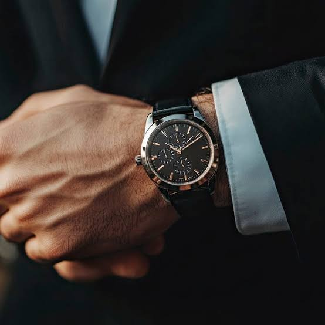
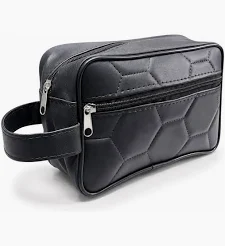

Aprendé a combinar ropa y zapatillas para armar tu propio estilo urbano.
Origen del streetwear y su relación con la música y el skate.

Remeras básicas, jeans, zapatillas blancas, camisas y accesorios
Cómo armar un outfit con blanco, negro y gris sin que se vea aburrido.
Cómo sumar un color fuerte sin recargar el conjunto.


Qué modelo combina mejor según el resto del outfit.



Gorras, reloj,neceser y cómo usarlas sin exagerar.
Prendas y estilos que están pegando fuerte este año.